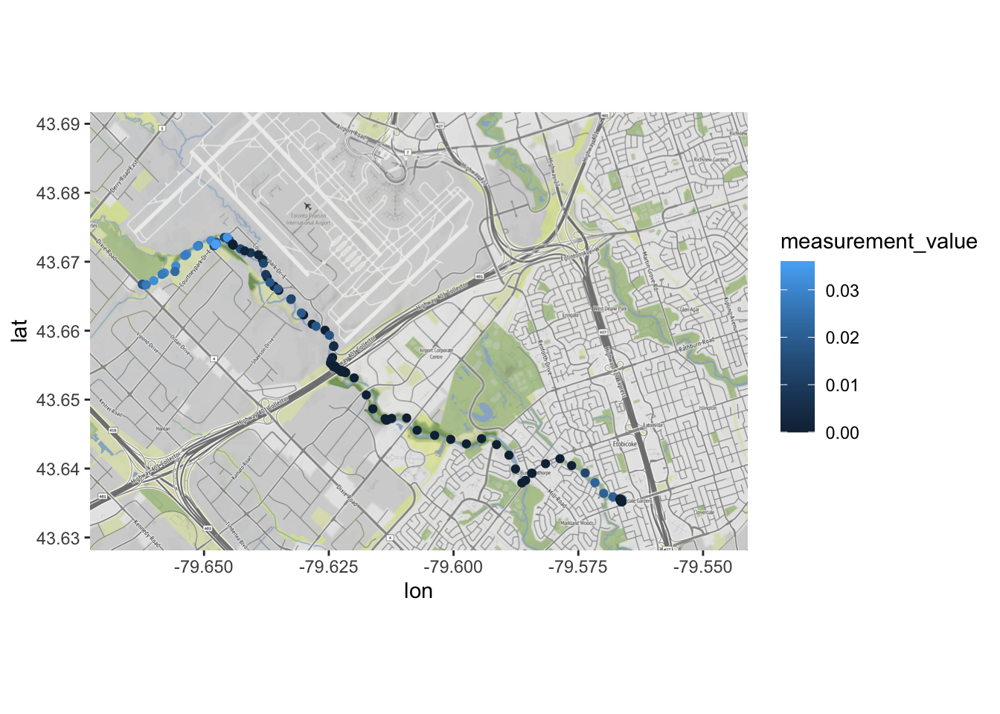

Chapter 20 Augmented Outputs and Evaluating Your Model
In this section we’ll discuss how to get more out of the model outputs and how you can evaluate the goodness of your fit beyond the use of \(R^2\).
20.1 Cleaning up Model Ouputs
The summary() function provides a decent overview of our model’s performance, but the outputs are difficult to work with. Let’s turn to the broom() package to clean up our model outputs.
library(broom)
calCurve <- FAES %>%
group_by(type) %>%
nest() %>%
mutate(fit = map(data, ~lm(signal ~ conc_Na, data = .x)),
tidied = map(fit, tidy),
glanced = map(fit, glance),
augmented = map(fit, augment)
)
calCurve## # A tibble: 1 × 6
## # Groups: type [1]
## type data fit tidied glanced augmented
## <chr> <list> <list> <list> <list> <list>
## 1 standard <tibble [15 × 4]> <lm> <tibble [2 × 5]> <tibble [1 × 12]> <tibble>Things look a bit more complicated than our earlier example, so let’s break down our code line by line:
- We’re taking the
FAESdataset that we created earlier. group_by(type)groups all rows bytype, in this situation we have only one type:standard.nest()collapses everything other than thetypecolumn into smaller data-frames. In this situation, all other information is stored as atibbleunder thedatacolumn; this is the data used to calculate the linear model.- With the
mutatefunction, we’ve created four columns:fit,tidied,glanced, andaugmented.
It’s these columns that contain our cleaned up model outputs. fit contains the raw output from the linear regression model for signal as a function of conc_Na using the lm() function. The output is in the form of a list, similar to what summary() gave us above. Again, this is exceptionally messy, hence why we used the tidy(), glance(), and augment() functions from the broom package . map() just means we’re applying the function tidy() to the individual output list created by lm() and stored in the fit column. Note that the tidy(), glanced(), and augmented outputs are tibbles. So we now have a tibble containing specific model output values (i.e. (Intercept)), lists (i.e. fit), and tibbles (tidied). This is known as **nested data*. We’re no longer in Kansas anymore…
We’ll break down what each function did below. Keep in mind however that lm() is used for a variety of statistical tests, and consequently has many associated outputs. Some are essential, others are useful, and some are useless for linear calibration. There are also many ways to use these additional model outputs to calculate outliers, etc. but you shouldn’t have any outliers in your calibration model. Don’t rely on statistics to bail you out of poor chemical technique.
20.1.1 Glanced Outputs
Let’s take a look at our model results. The glanced tibble contains “…a concise one-row summary of the model. This typically contains values such as R^2, adjusted R^2, and residual standard error that are computed once for the entire model”1 Because the data is nested, we’ll need to use unnest() to flatten it back out into regular columns:
glanced <- calCurve %>%
unnest(glanced)
# DT is to make interactive tables for the book.
DT::datatable(glanced,
options = list(scrollX = TRUE))What you see here is a bit more than what you’d get from Excel’s ‘line-of-best fit’ output. In brief, :
type,data,fit,tidied, andaugmentedare columns we’ve created earlier.r.squaredis a statistical measure of fit that indicates how much variation of a dependent variable is explained by the independent variable. The closerr.squaredis to 1, the more variance is captured by the model.adj.r.squaredis the same asr.squaredin this situation. This is becauser.squaredwill always increase if we add more exploratory variables to our model; theadj.r.squaredaccounts for the number of exploratory variables used in the model.- In our case we only have one exploratory variable, hence they’re approximately the same.
- The other columns are different measurements of goodness-of-fit and hypothesis testing of the model. See Further reading.
20.1.2 Tidied Outputs
But what about the slope and the intercept? After all, that’s what we need to calculate the concentration in our unknowns. Let’s take a look at tidied from the tidy() function which constructs a tibble that summarizes the model’s statistical findings. This includes coefficients and p-values for each term in a regression:2
# storing because we'll use it later on.
tidied <- calCurve %>%
unnest(tidied)
# DT is to make interactive tables for the book.
DT::datatable(tidied,
options = list(scrollX = TRUE))Again, a lot more to unpack compared to Excel. That’s because the lm() function in R calculates a generalized linear model. lm() performs a linear regression model, which we normally think of as an equation of the form \(y= a + bx\) as discussed earlier. But, regression models can be expanded to account for multiple variables (hence multiple linear regression) of the form:
\[y = \beta _{0} + \beta _{1} x_{1} + \beta _{2} x_{2} ... \beta _{p} x_{p}\]
where,
- \(y\) = dependent variable
- \(x\) = exploratory variable; there’s no limit how many you can input
- \(\beta _{0}\) = y-intercept (constant term)
- \(\beta _{p}\) = slope coefficient for each explanatory variable
With our linear calibration model, we only have one input variable for our model (conc), so the above formula collapses down to \(y = \beta _{0} + \beta _{1} x_{1}\). So looking at our tidied model outputs:
- each row corresponds to a model coefficient (under the
termcolumn). - For each modelling parameter, we’re provided an estimate of its numerical value:
estimate. These are the values we’ll use to calculate concentration. std.errormeasures how precisely the model estimates the coefficient’s unknown value; smaller is better.p.valueis an indication of the significance of a model coefficient; the closer to zero the better.- If we were to use multiple parameters in our model (e.g. concentration and temperature) we could use the
p.valueto determine if a given coefficient was useful for our model.
- If we were to use multiple parameters in our model (e.g. concentration and temperature) we could use the
We can extract the value of the model coefficients for subsequent calculations as follows:
# intercept
a <- as.numeric(tidied[1,5])
# slope
b <- as.numeric(tidied[2,5])
paste("The equation of our calibration curve is: y = ", a, " + ", b,"x", sep="")## [1] "The equation of our calibration curve is: y = 2615.11945030675 + 29707.1701380368x"20.1.3 Augmented Outputs
Finally, let’s take a look at the outputs of the augment function:
# storing because we'll use it later on.
augmented <- calCurve %>%
unnest(augmented)
# DT is to make interactive tables for the book.
DT::datatable(augmented,
options = list(scrollX = TRUE))As you can see, augment() adds columns to the original data that was modelled. For our purposes we’re interested:
signalandconc_Na, the original data used in our model..fitted, the predicted value of the point according to our calculated model..resid, the residuals of that point (different between measured and fitted values.)- The other parameters are different measurements of the influence of each point on the model fitting. They can be used to detect outliers; see Further reading
20.2 Incorporating Weights into your Model
You’ll often find that your calibration data is heteroscedastic, meaning the variance increases with the concentration. This leads to leverage of your line-of-best fit, as it is ‘pulled’ by one way or another by the higher concentration standards than the lower. You can assign ‘weights’ (how much a point impacts the model) in R, although you’ll need to justify the validity of your approach. A common approach, however, is to weight each standard by \(\frac{1}{x^2}\). This ensures that samples with higher concentration impact the line less, and vice-versa with low-concentration standards.
To utilize weight in R, we need to calculate the weight prior to modelling, and subsequently specify the weights column
# note that our blank has a concentration of 0, hence infinite weight.
# we need to remove it to weight our data.
FAESweighed <- FAES %>%
filter(conc_Na > 0) %>%
mutate(wght = 1/(conc_Na^2))
weightedCalCurve <- FAESweighed %>%
group_by(type) %>%
nest() %>%
mutate(fit = map(data, ~lm(signal ~ conc_Na, data = .x, weights = wght)),
tidied = map(fit, tidy),
glanced = map(fit, glance),
augmented = map(fit, augment)
) %>%
unnest(augmented)
ggplot(data = weightedCalCurve,
aes(x = conc_Na, y = signal)) +
geom_point() +
geom_smooth(method = 'lm', se=F, colour = "red", label = "unweighed") +
geom_smooth(method = 'lm', se=F, colour = "blue",
aes(weight=`(weights)`, label = "weighed")) ## Warning in geom_smooth(method = "lm", se = F, colour = "red", label =
## "unweighed"): Ignoring unknown parameters: `label`## Warning in geom_smooth(method = "lm", se = F, colour = "blue", aes(weight =
## `(weights)`, : Ignoring unknown aesthetics: label## `geom_smooth()` using formula = 'y ~ x'
## `geom_smooth()` using formula = 'y ~ x'
20.2.1 Why we approach modelling this way
You may be wondering why we’ve seemingly overcomplicated a simple enough procedure. Fair enough, we’ve showcased an analysis with a simple data set. However, as you progress in your studies you’ll be quantifying many compounds, often at the same time in the same instrument runs. If you organize your data in a tidy format, you can plot calibration curves for all of your compounds with the same block of code. Essentially you use group_by() to group your data by compound/element. Subsequently, the same code is expandable from 1 compound to as many as you can ever hope to quantify in one shot. So for upper year labs where you’re analyzing tens of compounds (cough the CHM410 labs) you can generate calibration curves for all your compounds at once.
20.3 Visualizing models
At the top of the chapter we plotted out standards to visualize a linear trend. Visualization is an essential component when calculating calibration curves, and indeed our standards appeared to follow a linear trend, which was corroborated by the model we calculated above. However, for publications/reports you’ll need to create a plot with both your standards and model with the displayed equation, so below is a bit of stock code you can use as a starting point to create these plots. Note that it requires the ggpmisc package to display the equation:
ggplot(data = FAES,
aes(x = conc_Na,
y = signal)) +
geom_point() +
geom_smooth(method = 'lm', se=F) +
ggpmisc::stat_poly_eq(formula = y ~ x, # formula uses aesthetic names
rr.digits = 4, # reported digits of r-squared
aes(label = paste(..eq.label.., ..rr.label.., sep = "~~~")),
parse = TRUE, size = 3) ## Registered S3 methods overwritten by 'ggpp':
## method from
## heightDetails.titleGrob ggplot2
## widthDetails.titleGrob ggplot2## Warning in .recacheSubclasses(def@className, def, env): undefined subclass
## "ndiMatrix" of class "replValueSp"; definition not updated## Registered S3 method overwritten by 'ggpmisc':
## method from
## as.character.polynomial polynom## Warning: The dot-dot notation (`..eq.label..`) was deprecated in ggplot2 3.4.0.
## ℹ Please use `after_stat(eq.label)` instead.
## This warning is displayed once every 8 hours.
## Call `lifecycle::last_lifecycle_warnings()` to see where this warning was
## generated.## `geom_smooth()` using formula = 'y ~ x'
20.3.1 Visualizing residuals
As discussed in the Modelling Theory section, residuals are the difference between measured and fitted values. They’re often overlooked in linear calibration and folks are hot to plot a straight line through their data. This has the unintended effect of fooling your eyes into thinking your data is linear. Consequently, it is always a good idea to plot the residuals of your model as this will magnify any trends or discrepancies of your calibration model. A good linear model will have the residuals randomly distributed about zero. Other examples of patterns in residuals are shown below:
Figure 20.1: Example residual patterns; figure adapted from Hibbert and Gooding (2006).
- Normally distributed residuals are satisfactory for linear modelling. Note the relatively small magnitude of the residuals.
- Curvature throughout range results from an instrument becoming saturated. Consequently, the linear model will ‘cut’ through the curve. This is a good indication that you’ll need to either breakdown your calibration curve into two or more parts or utilize a non-linear model.
- Heteroscedasticity means the variance of the response is proportional to the concentration. This is often the case in instrumental analysis. See [Weighing] above.
- Outliers shouldn’t exist in your calibration plot, nevertheless, a plot of residuals can readily highlight an outlier point.
20.3.2 Plotting residuals
To plot residuals, we use our augmented dataset from above, and simply create a plot of the independent variable vs. the residuals. Here we plot the FAES calibration model and its residuals. Note that the residuals indicate curvature throughout the range. We may have overextended our calibration range outside of the linear range of our instrument.
a <- ggplot(data = FAES,
aes(x = conc_Na,
y = signal)) +
geom_point() +
geom_smooth(method = 'lm', se=F) +
ggpmisc::stat_poly_eq(formula = y ~ x, # formula uses aesthetic names
rr.digits = 4, # reported digits of r-squared
aes(label = paste(..eq.label.., ..rr.label.., sep = "~~~")),
parse = TRUE, size = 3)
b <- ggplot(data = augmented,
aes(x = conc_Na, y = .resid)) +
geom_point()
ggpubr::ggarrange(a, b, ncol = 2, labels = c("A", "B"))## `geom_smooth()` using formula = 'y ~ x'
Figure 20.2: (A) linear calibration model and (B) plot of model residuals.
20.4 Calculating Concentrations from the Augmented Outputs
In Tidied outputs we extracted our model coefficients (slope and intercept):
# intercept
a <- as.numeric(tidied[1,5])
# slope
b <- as.numeric(tidied[2,5])
paste("The equation of our calibration curve is: y = ", a, " + ", b,"x", sep="")## [1] "The equation of our calibration curve is: y = 2615.11945030675 + 29707.1701380368x"Now that we have our coefficients, we can calculate the sample concentration as described in Modelling Theory. Let’s import the FAES unknown dataset first:
FAESsamples <- read_csv(file = "data/FAESUnknowns.csv") %>%
pivot_longer(cols = -c(sample, `dilution factor`),
names_to = "replicate",
names_prefix = "reading_",
values_to = "signal")## Rows: 3 Columns: 5
## ── Column specification ────────────────────────────────────────────────────────
## Delimiter: ","
## chr (1): sample
## dbl (4): dilution factor, reading_1, reading_2, reading_3
##
## ℹ Use `spec()` to retrieve the full column specification for this data.
## ℹ Specify the column types or set `show_col_types = FALSE` to quiet this message.## # A tibble: 9 × 4
## sample `dilution factor` replicate signal
## <chr> <dbl> <chr> <dbl>
## 1 wine 10 1 12775.
## 2 wine 10 2 12651.
## 3 wine 10 3 12746.
## 4 tap-water 10 1 8014.
## 5 tap-water 10 2 7200.
## 6 tap-water 10 3 7203.
## 7 fish-tank 100 1 12085.
## 8 fish-tank 100 2 12073.
## 9 fish-tank 100 3 12156.Now it’s simply a matter of calculating the concentration of the sample analyzed by the instrument, and correcting for the dilution factor to find the concentration in the parent sample:
FAESsamples <- FAESsamples %>%
mutate("instConc" = (signal - a)/b,
"sampleConc" = instConc * `dilution factor`)
DT::datatable(FAESsamples, options = list(scrollX = TRUE))And let’s summarize our results using code from the Summarizing data chapter:
FAESsamples %>%
group_by(sample) %>%
summarize(mean = mean(sampleConc),
sd = sd(sampleConc),
n = n())## # A tibble: 3 × 4
## sample mean sd n
## <chr> <dbl> <dbl> <int>
## 1 fish-tank 31.9 0.150 3
## 2 tap-water 1.64 0.158 3
## 3 wine 3.40 0.0219 3And there we go. See the Summarizing data and Visualizations for Env Chem chapters for assisting in making prettier tables and visualizations, respectively.
20.5 Exercise
There is a set of exercises available for this chapter!
Not sure how to access and work on the exercise Rmd files?
Refer to Chapter 3.2 for step-by-step instructions on accessing the exercises and working within the UofT JupyterHub’s RStudio environment.
Alternatively, if you’d like to simply access the individual files, you can download them directly from this repository.
Always remember to save your progress regularly and consult the textbook’s guidelines for submitting your completed exercises.